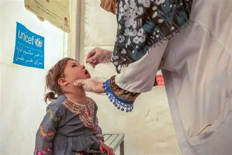

UNICEF Urges Vaccination of All Afghan Children to Eradicate Polio
The United Nations Children’s Fund (UNICEF) has called for all children in Afghanistan to be vaccinated against polio, stressing that sustained immunization efforts are essential to eradicating the disease.
Read more Show less
In a statement marking World Polio Day on Saturday, October 24, UNICEF paid tribute to health workers and vaccinators on the front lines of the fight against polio, commending their efforts to protect children through vaccination.
UNICEF said polio cases worldwide have fallen by more than 99 percent, marking significant progress in the global campaign to eliminate the disease. However, the agency warned that as long as the virus persists anywhere in the world, children everywhere will remain at risk.
The organization emphasized that ensuring every child has access to the polio vaccine is critical to interrupting transmission and achieving a polio-free world.
Despite substantial global progress, Afghanistan continues to face challenges in eliminating polio. An increase in cases in recent years has highlighted the need to expand vaccination coverage, strengthen preventive measures and sustain efforts to protect children from the disease.